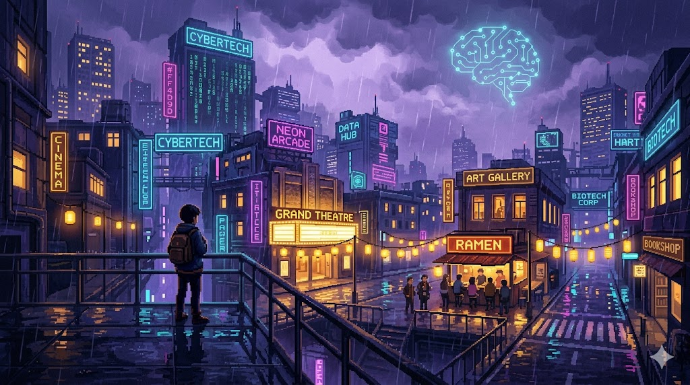

Synthwave'owe miasto nocą — ale jedna zasada robi z niego markę: zimny neon to technologia, ciepłe złoto to kultura i wspólnota. Oba światła świecą obok siebie. To dosłownie misja fundacji: AI nie zastępuje kultury — kultura jaśnieje pośród technologii.

Neony tech, matrix, dane, mózg-obwód. Buduje klimat i nowoczesność — ale zostaje w tle, nie atakuje.
Okna, lampiony, marquee kina, galeria, ludzie razem. To akcent i serce — mało, ale przyciąga wzrok i emocje.
Stała grubość linii, miękkie narożniki, złota poświata. Ikony mają być ludzkie i przystępne — nigdy ostre, „techniczne" piktogramy, których Anna ma się bać.
Karta na półprzezroczystym szkle z neonową poświatą. Jedna karta = jeden obszar oferty. Złota ikona prowadzi wzrok.
PRD wymaga dokładnie dwóch działań. Hierarchia przycisków to odzwierciedla: jedno główne (złote), jedno poboczne (ghost).
Złoty = akcja docelowa (formularz). Ghost z cyjanową poświatą na hover = ruch poboczny (social). Nigdy dwa krzykliwe CTA naraz.